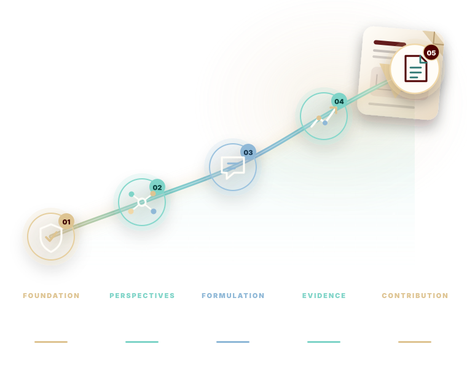

01 · Discover
See how the field asks questions.
Twelve presentations expose students to different research programs, problem settings, methods, and forms of impact across VCIM.
Introduction to Research in Visual Computing and Interactive Media is a guided semester in responsible inquiry, faculty perspectives, scholarly tools, collaborative investigation, and research communication.

15 weeks of connected research practice
The course connects the conduct of research, the breadth of VCIM faculty programs, academic integrity, literature review, research strategy, technical writing, and a team project that culminates in a publication-ready paper.
Twelve presentations expose students to different research programs, problem settings, methods, and forms of impact across VCIM.
Problem presentations, group formation, and literature analysis help teams move from a broad topic to a focused contribution.
Integrity, fair use, human-subject review, documentation, and structured critique are treated as part of the research method—not paperwork after it.
LaTeX, BibTeX, paper structure, progress presentations, and revision converge in a final team presentation and research paper.
Semester outcome “A paper ready to submit for publication.”
Each phase prepares the decisions required by the next: standards shape observation, observation shapes questions, questions shape evidence, and evidence shapes the paper.
Integrity and fair use establish the conditions for credible work.
Faculty perspectives reveal the range and texture of VCIM research.
Teams form, literature is organized, and the writing workflow begins.
Teams position, execute, critique, and steadily strengthen their studies.
The contribution is presented, documented, and prepared for review.
Filter the roadmap by faculty perspectives, research methods, or project-studio work. Assignment milestones appear directly inside the relevant week.
Each Friday session contains three 45-minute presentations. Listen for the problem being addressed, the evidence used, the methodological choices, and the contribution each speaker makes visible.
Week placement follows the syllabus; consult Canvas for final calendar dates and updates.The central project begins with problem formation and develops through literature positioning, responsible study design, repeated progress reports, research presentations, and final scholarly communication.
Make every claim answerable by evidence, and make every piece of evidence traceable to a research decision.
Agree on the problem context, complementary roles, and a direction that can be investigated within the semester.
Survey prior work, manage references in BibTeX, identify the gap, and submit the literature review.
10 points · Literature reviewConsider human-subject review where relevant, then organize the paper around the study’s questions, evidence, and contribution.
Weekly team progress reports make the developing study visible and convert feedback into focused next steps.
Research presentations · 30 points totalConsolidate the semester’s work into a coherent scholarly narrative prepared for conference or journal submission.
30 points · Research paperSmall acts of attentive participation lead into the larger work of literature synthesis, research communication, and the final team paper.
The outcomes move from understanding the research environment to evaluating conduct, synthesizing literature, executing original work, and writing a well-organized paper.
This page highlights course-specific expectations. The official syllabus remains the authoritative source for complete university policies and procedures.
Maintain appropriate records of your process, sources, decisions, and contributions. Research credibility begins with transparent authorship and traceable work.
AI tools may be used for studying and exploring course content. They are not permitted for completing assignments or drafting the research paper.
Late work receives a grade of zero. Makeup work associated with an excused absence is handled under the university attendance and makeup-work policy.
Class participation is attendance-based, with one point awarded for each class attended or covered by an excused absence.
No textbook is required. Course materials, announcements, final calendar dates, and assignment instructions should be followed through the official course channels.